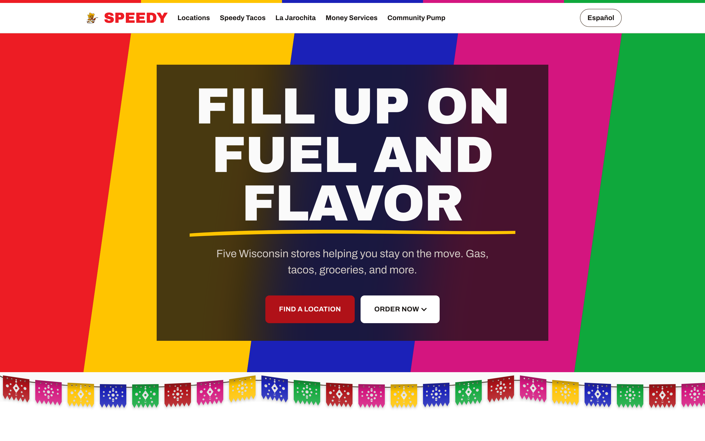

Work · Multi-Location Web System
Speedy Gas Station
A five location Wisconsin gas station and taqueria chain. We rebuilt their site as one system the owner runs without calling a developer.

The problem
Speedy runs five stores across Wisconsin: Eau Claire, Arcadia, Lake Mills, Waterloo, and Fort Atkinson. Every one sells fuel, hot Mexican food, pan dulce, and Hispanic groceries. Every one runs money services: remittances, check cashing, and bill pay. Two have full taquerias. None of that was on their website. They were on Squarespace, and all five location pages were empty shells.
That is a revenue problem, not a cosmetic one. Someone sitting in a car looking for the nearest open store, today's hours, or a way to order food could not find any of it. Five towns were each running local searches in English and Spanish, and Speedy was competing in none of them. Physical QR codes on the gas pumps pointed at a page on the old site, and those pumps could not be reprinted.
What we built
We rebuilt it from scratch as a system, not a set of pages. Every location specific fact lives in one data file, and one template renders all five stores. Adding a sixth store is one entry. No new page, no new code, no developer call.
Each town gets its own indexed URL, its own hours, its own map pin, and its own community page, so five stores compete in five separate local searches instead of one. The whole site runs in English and Spanish. The pump QR codes still work, because every old URL redirects instead of returning a 404.
The general manager edits it. Copy, hours, photos, menu items, and prices all change in a CMS, and every save is a commit that rebuilds the site a minute later. What is not editable is deliberate. Navigation, store slugs, coordinates, and the color system stay locked, because those are structure, and changing them breaks a link or breaks a meaning.
Color carries information here. Red means there is a restaurant at this store. Amber means fuel or rewards. Turquoise means the Community Pump, the local charity each store backs in its own town. That logic lives in the code rather than in the habits of whoever edits next, and every color pair on the site is measured for contrast.
The brand rules are enforced by the build itself. It fails on an image with no alt text, or on punctuation the brand does not allow, so the standard holds whether the next edit arrives through the CMS or straight from a text editor. Unknown facts render as a visible TBD and get logged instead of guessed, which is why the site never shipped an invented phone number or a made up charity name.
want something like this?